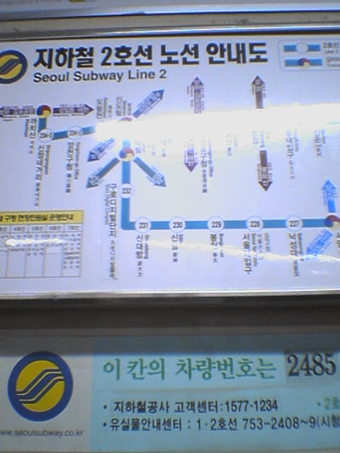

[지하철 노선도 일부분. 다소 선명하지 않은건 핸드폰 카메라 탓]
아침 출근길에 무심코 지하철 노선도를 보게 되었다.
스티커로 수정된 '구로디지털단지' 역이 보인다.
'구로공단' 역에서 바뀐 이름이다.
1988년도 서울올림픽 이후 모든 역 명에는 영문과 한자가 병기되고 있다.
동서양 외국인에 대한 배려이다.
구로디지털단지도 영문과 한자를 병기해서... 앗!!
사진이 선명하지 않아서 잘 안보일지도 모르겠는데. 뭔가 어색하다.
그것은 다름아닌 "九老디지탈團地" !!
한글엔 '디지털' 로 되어 있고 한자엔 '디지탈' 로 되어있다!
...라는걸 지적하려는게 아니다.
이건 대체 누구를 위한 표기란 말인가?
올림픽 끝난지 오래되서 취지를 잊은건가....